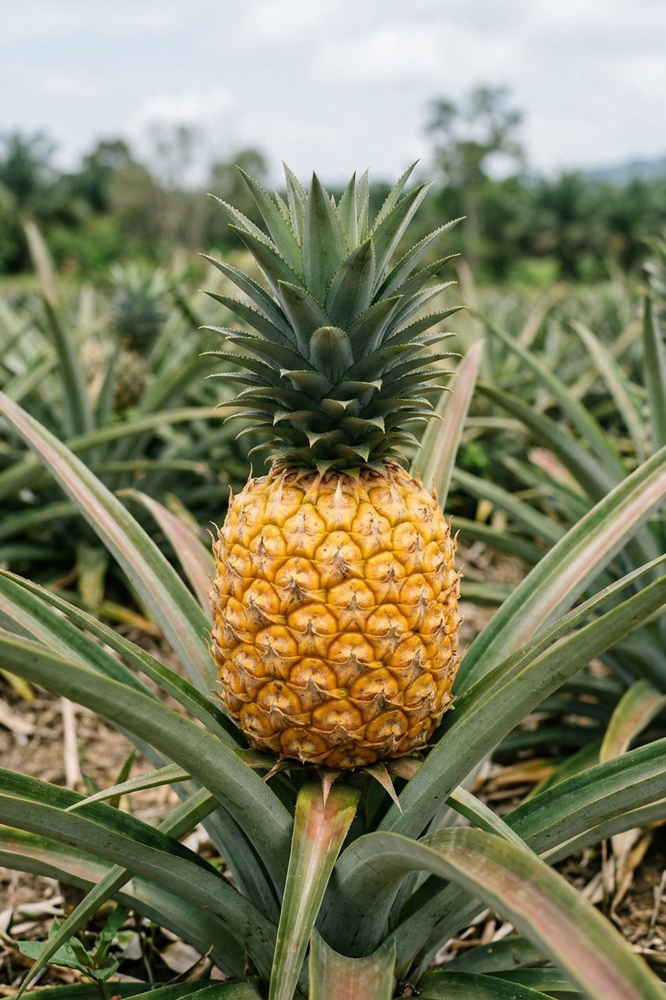
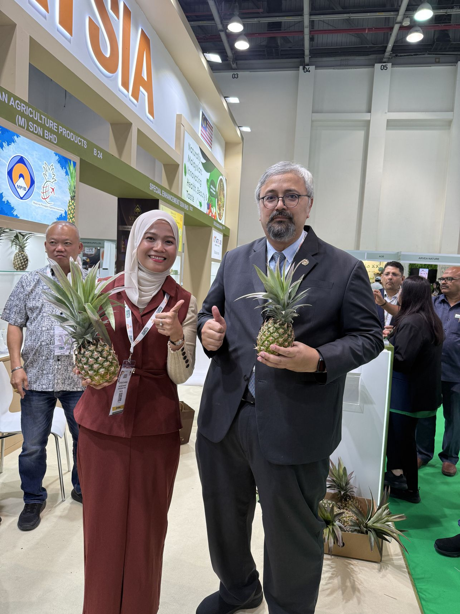
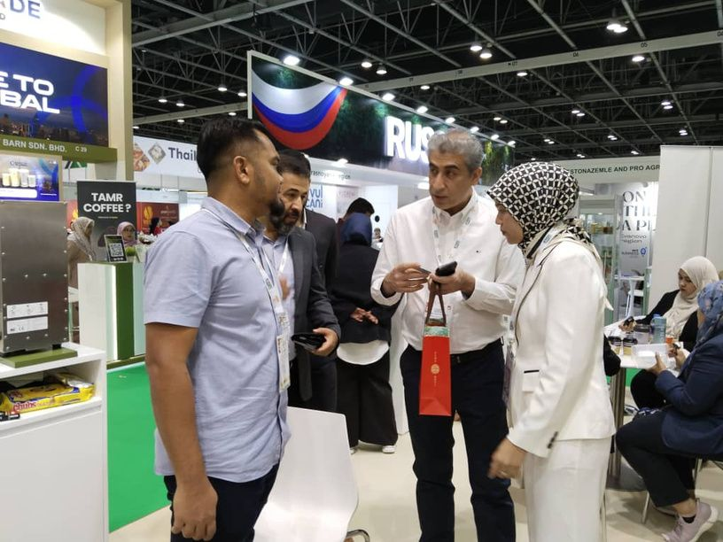
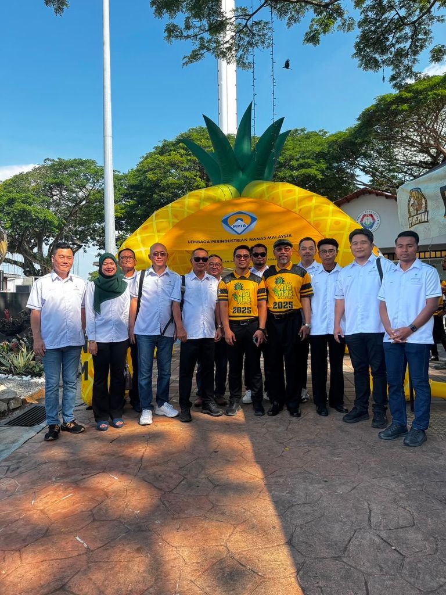
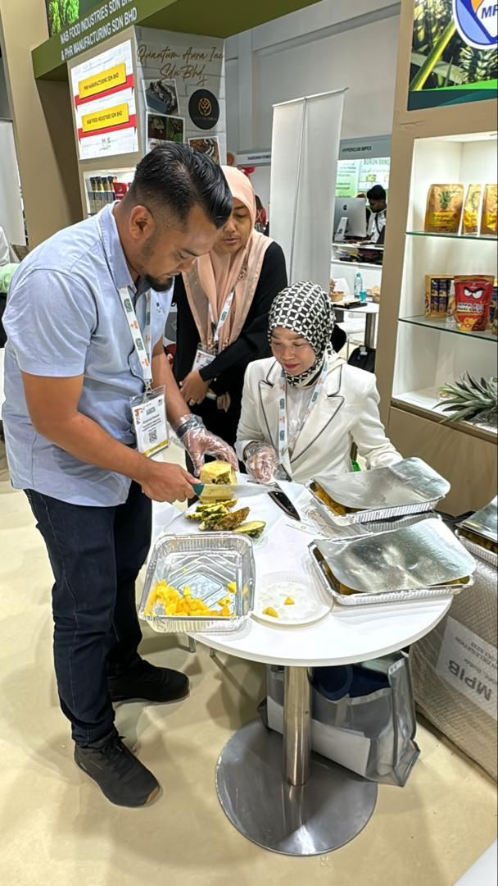
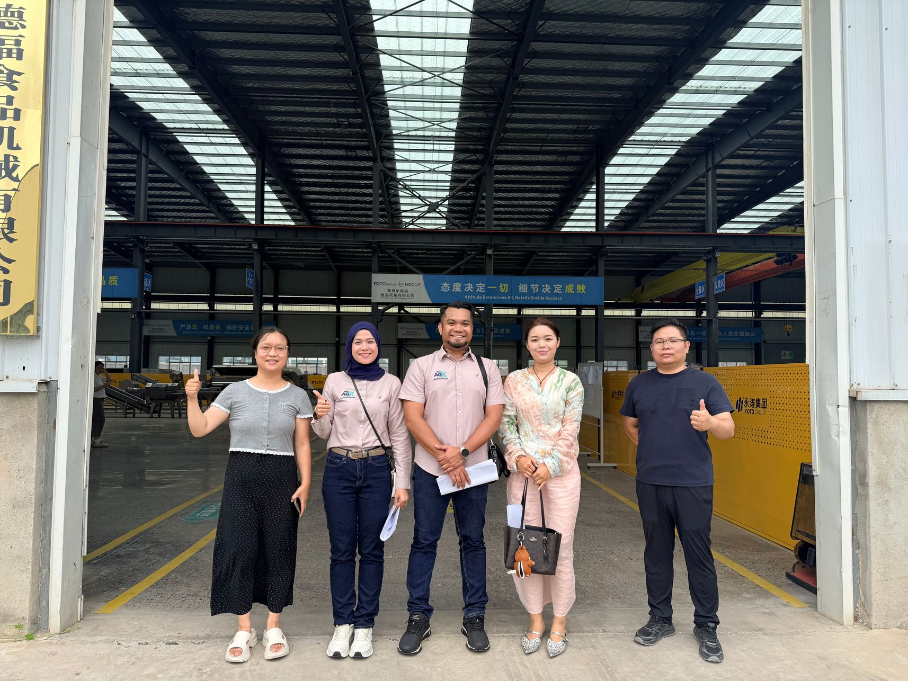

For buyers
Fruit you can plan around.
- Dependable sourcing
- Consistent quality
- Better coordination from farm to delivery
MD2 and Sarawak Gold pineapple, fresh and IQF frozen. 40 acres ours. 600 acres with 50+ farmers.
MD2 & SG1 pineapple · 600+ acres · 50 t/day · 6 markets
Upstream
From Perlis to Pontian, our own farms and 50+ contract farmers grow MD2 and SG1. Every point is an acre.
Midstream
Collected into our CPPC at Labu Lanjut, Sepang: sorted, graded, packed, held in 3 cold rooms or IQF frozen. Up to 50 tonnes a day.
Downstream
By air from KLIA, by sea from Port Klang.
 Illustrative
Illustrative
The network in numbers. Each figure is drawn in points: one point, one unit of what we can supply.
600+ acres across 6 states through contract farming
50 t/day CPPC handling capacity
50+ farmers in our contract network
40+ acres of our own MD2 and SG1 farms
6 markets Japan, South Korea, China, UAE, Saudi Arabia, Europe
Building a stronger agricultural supply chain that grows together with farmers: farming expertise, farmer development and market access in one business.
For buyers
 Illustrative
IllustrativeFor farmers
Two varieties, two forms, quoted per order. Price on request: quoted by volume and destination.
 Illustrative
Illustrative
MD2
Sweet, low-acid, golden through. Graded and packed at our CPPC for export and domestic buyers.
Price on request
Add to my sourcing brief
IllustrativeSG1
Malaysia's own golden pineapple, from our SG1 farm in Pontian, Johor, and our growers.
Price on request
Add to my sourcing brief Illustrative
Illustrative
IQF
Cut and individually quick frozen, for processors, food service and importers, all year.
Price on request
Add to my sourcing briefDependable sourcing, consistent quality and better coordination from farm to delivery. See how it works


Upstream
Own farms and 50+ contract farmers. We plan production and give agronomy and technical support.
Midstream
Aggregation, sorting, grading, packing, 3 cold rooms and IQF. Up to 50 t/day.
Downstream
Domestic distribution, or export by air from KLIA and by sea from Port Klang.
More Than a Supplier. An Integrated Agribusiness Partner.
 Khairul Anuar Mohd ShahCo-Founder and MD
Khairul Anuar Mohd ShahCo-Founder and MD Dr Siti Nur Syuhada MusaDirector and Strategic Advisor
Dr Siti Nur Syuhada MusaDirector and Strategic Advisor MoU with LPNM, MAHA
MoU with LPNM, MAHA
Trade fair Signing, UAE
Signing, UAE Meeting, China
Meeting, China The team at the CPPC
The team at the CPPC
Trade-show booth
The team
Tasting eventNetwork target
2023 · pivot into pineapple
2,000 acres by 2028. The network grows farm by farm, and every new acre is another point on the map.

 Technical support · Illustrative
Technical support · IllustrativeYour farm joins 50+ growers
Tanam bersama kami [client to confirm]
Farmers Grow. Agrionyx Connects the Ecosystem. A contract, technical support and a buyer for your pineapple.
Send a sourcing brief. We reply with availability and a quote, by volume and destination.
 Graded to your brief · Illustrative
Graded to your brief · IllustrativeYour message
Open in WhatsAppMOQ, Incoterms and certifications [client to confirm]. We quote per order.